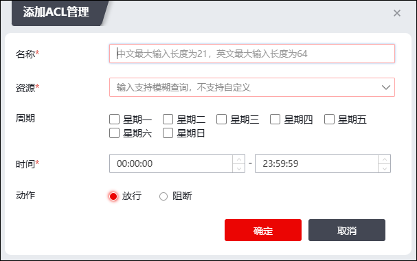

NGFW中的ACL（Access Control List，访问控制列表）定义了在什么时间内允许或禁止用户对哪些资源进行访问，管理员可以自定义添加ACL规则，来保障非授权用户只能访问特定的资源，达到对访问进行控制的目的。
ACL管理模块的具体操作步骤如下。
| 步骤1 | 配置ACL默认动作。 |
选择 ，默认动作开关如下图所示。
“ON”或“OFF”表示“允许访问”或“禁止访问”。
|
² ACL的默认动作用于定义不匹配所有自定义ACL规则的资源访问权限，即：当用户想要访问的某个资源不匹配所有的自定义ACL规则时，NGFW会将ACL默认动作配置的权限授予该用户。 |

| 步骤2 | 添加ACL规则。 |
点击“添加”，弹出“添加ACL管理”窗口，如下图所示。

在添加ACL规则时，各项参数的具体说明如下表所示。
参数 |
说明 |
|---|---|
名称 |
必填项，设置ACL规则名称。中文最大输入长度为21，英文最大输入长度为64。 |
资源 |
必选项，在下拉框中选择已经配置完成的资源名称。资源的配置请参见 资源管理。 |
周期 |
设置允许访问的日期。选项包括：星期一、星期二、星期三、星期四、星期五、星期六和星期日。 |
时间 |
设置允许访问的时间。管理员输入开始时间和结束时间。 |
动作 |
指是否允许符合该ACL规则的用户访问指定资源。选项包括：放行、阻断。 |
| 步骤3 | 点击【确定】按钮，完成自定义ACL规则的添加。 |